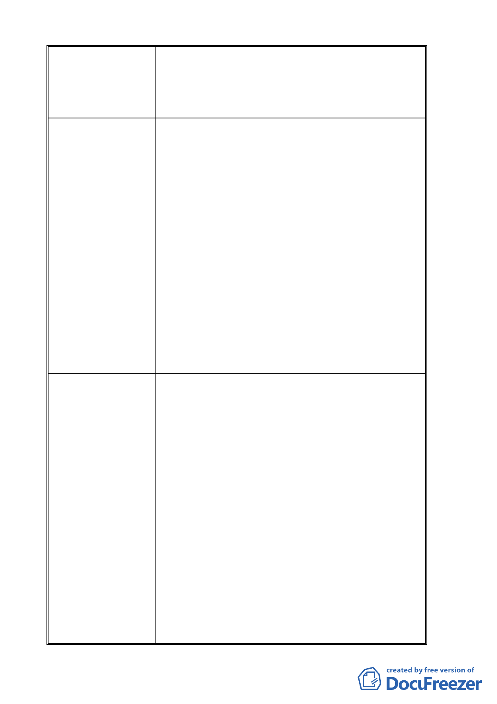

故政大在本區塊經營已脫離其宗旨並影響三角地商機及
居民生計。
叁、有關捷運系統南環線政大車站進駐三角地都更開發
與指南山莊未來開發等，勢必將產生大量電力需求
與變更站之設置。
建 議 辦 法 壹、
1. 在政大一街西側底端與指南路三段交間處沿指南溪
(或醉夢溪)畔南側，新開設一景觀道路連接恆光橋
疏通交通車流(來自貓空木柵)。
2. 以地下車道方式由道南橋經政大四維道地底開設新
道路連結政大一街西側底端分散車流。
3. 上述兩條道路權屬均為國有，作公共設施用途較不
引起民怨及侵犯憲法保障人民私有財產與居住自由
之權利受損。
貳、
1.在土地使用分區管制中應列不得作為分區管制規則中
第 17、19、20、21、22 組之使用，嚴格列管。
2.建請權責單位調查確實商業活動在前述區塊之使用面
積並列入都審檢討之重要議題。
叁、建議在現在指南山莊區塊內劃設一變電站用地，遠
離社區主要生活區塊，以免發生在台北縣板橋市新
板特區建變電所引起居民反彈之情事。政大三小段
91 地號權屬國有機關用地(公共設施用地)。
申請單位回應意見 1. 本案未來將配合都市更新進行地區環境調整，故提出
交通改善構想計畫，若本地居民未來無意願進行都市
更新，則可考量其他改善方案。
2. 另本計畫書所提之交通改善構想並未位於本次計畫
範圍內，不涉及變更計畫內容，為避免誤解，將刪除
該部分構想之相關內容。
3. 有關本案變更後可能引進商業行為是否影響周邊社
區商機部分，99 年 7 月 27 日專案小組會議決議：「有
關民眾陳述變更後之校園規劃引進商業行為是否影
響周邊社區商機乙項，涉及後續學校整體規劃發展方
向，非屬本變更案之審議內容，後續請申請單位可於
「木柵二期重劃區與政治大學周邊地區整體規劃與
改善計畫」規劃案內通盤考量。」，政治大學將依賺
專案小組意見辦理。
4. 本案後續開發及捷運設站後是否造成地區供電不足
之疑慮，政治大學以 99 年 7 月 30 日政總字第
0990019187 號函，請台北市政府捷運工程局及台灣
電力公司表示意見；台北市政府捷運工程局以 99 年
8 月 10 日北市捷規字第 09932638100 函表示：「…
-9-